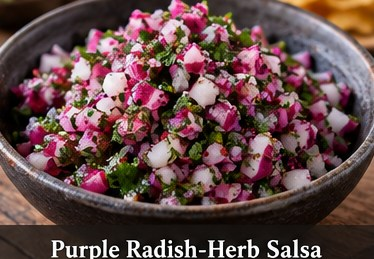

Mexican · Salsa · Serves: 4 Time: 10 minutes
Purple Radish-Herb Salsa

Ingredients
- 5, finely diced Purple plum radishes
- 1/4 medium, finely diced Red onion
- 1/3 cup chopped Cilantro
- from taco recipe, thinly Green onion tops sliced
- 2 Tbsp Lime juice
- 1/2-1, minced; optional Jalapeno
- 1/3 tsp, then to taste Kosher salt
Instructions
- Combine radishes, red onion, cilantro, green onion and optional jalapeno.
- Add lime juice and salt. Toss and let stand 10 minutes.
- Taste immediately before serving and adjust lime or salt.